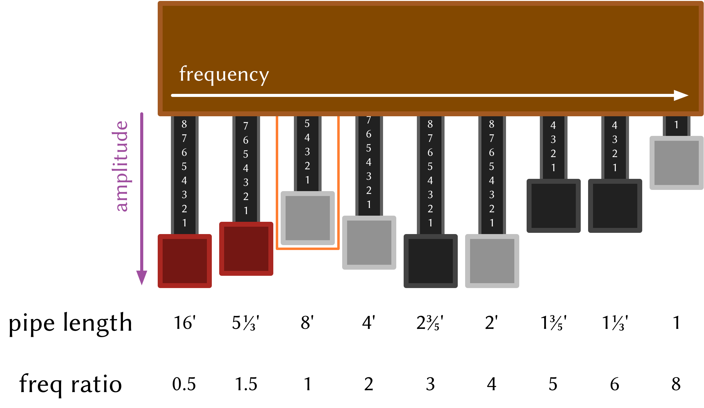

Making an instrument¶
Note
This was once a blog post—corrections/improvements welcome.
Warning
This guide refers to the values in the DSP signal chain
as double, whereas they are now SAMPLE, which is
aliased to float by default. I’ll update it ASAP, but
for now just keep that in mind
This covers the basics of creating an instrument in Extempore. While there are other docs which cover audio digital signal processing (DSP) at a lower level—from the basic building blocks of oscillators and filters, this tutorial covers the process of building an instrument which can be played using the conventional midi parameters of pitch and velocity. There’ll be some DSP required to build the instrument, but playing it becomes just like playing any other soft synth or sampler plugin. The reason to build instruments is so that you don’t have to construct your audio synthesis chain from scratch each time, sometimes you just want to load a plugin and start playing.
Like everything in Extempore, though, we’re going to build the instrument in xtlang and compile it at run-time. If you want the simple ‘load up a patch and go’ experience, then just load the xtlang code from a file. But if at any stage you want to modify the guts of the instrument while you’re using it, then just bring up the code, change it around, re-compile it, and you’ll hear the results straight away.
This is a also a fairly long and detailed post. If you’re interested in just playing instruments rather than writing them, you don’t need to know all this and can jump ahead to Playing an instrument. If you want to come back later to find out in a bit more detail exactly what’s going on with Extempore instruments then this is the place to find out.
The Hammond organ¶
The instrument we’re going to build in this tutorial is a hammond organ. Firstly, because the Hammond organ is an iconic sound—widely used in many genres of music since its invention in 1934. Any digital synthesis environment worth it’s salt has to provide a hammond patch of some description :) And secondly, because the hammond organ is actually not too tricky to sythesize, at least in a simplified way. The organ’s tone is basically the result of the superposition of 9 sinusoids (one for each tonewheel), and so it’s a nice way to introduce the basics of additive synthesis.
Any commercial Hammond organ modelling synth will add heaps of other stuff to this basic tone, to faithfully recreate the nuances and quirks of the real physical instrument, even down to the details of the specific model being emulated. We won’t try to do too much of that in this tutorial, but again, if you want to hack around add things to the instrument then feel free.
So why do they call them tonewheel organs, anyway? A tonewheel is a metal disks (wheel) with a corrugated edge. The disk is mechanically rotated on it’s axis near an electrical pickup, which ‘picks up’ the changes in the electrical and magnetic fields due to the rotation of the wheel (and particularly the bumps on the edge of the wheel). As the bumps go past the pickup, they induce a voltage which causes a current, which is the audio signal. The frequency (pitch) of the signal can be changed by altering the rotation speed of the wheel.
In general, each tonewheel is set up to generate a sine wave. By having multiple tonewheels of different diameters attached to the same axle, the organ generates several different sinusoids together, which allows it to have a more interesting timbre than just a sine tone.
The key tone-shaping controls in a Hammond organ are its drawbars, which look like this:
Each drawbar controls the relative amplitude of a given tonewheel. The tonewheels are denoted by their ‘pipe length’, which is a carry-over from pipe organ design, which Hammond originally developed the tonewheel organ to be a cheap replacement for. A longer pipe means a lower pitch, so the drawbars are laid out from low harmonics on the left to high harmonics on the right. Even though in a tonewheel organ there aren’t any pipes (because they’re been replaced by tonewheels!) the drawbars are still labelled in this way. And anyway, if we’re modelling the organ digitally then there aren’t any real tonewheels either :)
To change the tone of the organ, the organist can adjust the positions of the drawbars. Fully ‘out’ (down in this diagram) means that the frequency associated with that tonewheel is at it’s maximum, whereas fully ‘in’ (up in this diagram) means that that frequency is silent. The colours of the drawbar ends also give information about that harmonic: red drawbars for sub-harmonics, grey for even harmonics and black for the odd harmonics. Confusingly, by convention the left-most drawbar isn’t the fundamental frequency of the note, it’s an octave below the fundamental (which is controlled by the third drawbar, indicated by the orange box in the diagram). It’s also important to remember that the drawbars don’t represent specific pitches, because the absolute pitch each drawbar is mapped to depends on the note being played (in the original tonewheel design, this is controlled by how fast the axle with the tonewheels on it is rotating). The ratios between the frequencies are the important part, because they define how the organ sounds—the organ’s timbre.
Now, this is probably more information than is absolutely necessary to construct a simple model of the organ—at a bare minimum all we really needed to know was that the organ tone is a sum of sinusoids and the frequency relationships between those sinusoids. Still, a bit more context is helpful in understanding why the organ’s tone is produced like it is, and helps us think about how to represent and produce the tone digitally.
Making a drone organ¶
The first part of making an instrument is defining its ‘drone’ tone: the sound that the instrument makes when it’s being sustained. The kernel is just the sound the instrument would make if it were allowed to drone on forever without stopping, like if you left a paperweight on one of the organ’s keys.
So, because the basis of the hammond organ tone is the sum of 9
sinusoids (one for each drawbar), then that’s what we need to generate.
There are lots of ways to do this, but one nice way is to use oscillator
closures created by Extempore’s osc_c function.
(sys:load "libs/core/instruments.xtm")
(bind-func organ_drone
(let ((num_drawbars 9)
;; allocate memory for the oscillators and other bits and pieces
(freq_ratio:SAMPLE* (zalloc num_drawbars))
(drawbar_pos:i64* (zalloc num_drawbars))
(tonewheel:[SAMPLE,SAMPLE,SAMPLE]** (zalloc num_drawbars))
(i 0))
;; fill the allocated memory with the right values
;; drawbar frequencies as ratio of fundamental frequency
(pfill! freq_ratio 0.5 1.5 1.0 2.0 3.0 4.0 5.0 6.0 8.0)
;; drawbar positions: 0 = min, 8 = max amplitude
(pfill! drawbar_pos 8 8 8 0 0 0 0 0 0)
;; put an oscilattor into each tonewheel position
(dotimes (i num_drawbars)
(pset! tonewheel i (osc_c 0.0)))
(lambda (freq)
(let ((sum 0.0))
;; loop over all the drawbars/tonewheels to get the sum
(dotimes (i num_drawbars)
(set! sum (+ sum (* (/ (convert (pref drawbar_pos i) SAMPLE) 8.0)
((pref tonewheel i) 1.0
(* freq (pref freq_ratio i)))))))
;; normalise the sum by the number of drawbars
(/ sum (convert num_drawbars SAMPLE))))))
;; send the organ drone to the audio sink
(bind-func dsp:DSP
(lambda (in time chan dat)
(organ_drone 440.0)))
(dsp:set! dsp)
Compiling the function organ_drone does three things:
- allocate memory to store the data associated with our sine
oscillators. For each oscillator, this is
freq_ratio(the frequency relationship to the fundamental),drawbar_pos(the amplitude of the sine tone) andtonewheel(the oscillator closure itself). This data is all stored via pointers to zone memory through the calls tozalloc.
fill memory with the appropriate values. For
freq_ratioanddrawbar_pos, the values are set ‘manually’ usingpfill!, while for filling thetonewheelbufferosc_cis called in a loop (dotimes).create & bind a closure (the
lambdaform) which calculates the current output value by calling each of the oscillators in thetonewheelclosure buffer, summing and returning their (normalised) return values. This closure is then callable using its name:organ-drone.
When we call the organ_drone closure in the dsp callback, we
hear a droning organ tone. It should be really obvious at this point
that the closure organ_drone doesn’t represent a pure function:
one that stateless and always returns the same output value for a given
input value. If it were a pure function, then calling it in the dsp
callback above with an argument of 200.0 would always return the
same value. This wouldn’t be very interesting in an audio output
scenario—audio is only interesting when the waveforms are oscillating,
and particularly when the oscillations are periodic. That’s basically
all pitched sounds are: periodic waveforms. So for the organ_drone
closure to produce a nice pitched organ tone, there must be some state
hidden somewhere which is changing and allowing the closure to return a
periodic waveform.
If you guessed that the magic happens in the closures returned by
osc_c (which are in the memory pointed to by tonewheel), you’d
be right. Each closure ‘closes over’ a state variable called phase,
which you can see in the source for osc_c (which is in
libs/core/audio_dsp.xtm)
(bind-func osc_c
(lambda (phase)
(lambda (amp freq)
(let ((inc:SAMPLE (* STWOPI (/ freq SR))))
(set! phase (+ phase inc))
(if (> phase SPI) (set! phase (- phase STWOPI)))
(* amp (_sin phase))))))
In an xtlang type diagram, osc_c looks like this
osc_c is a higher-order closure, because it returns a closure, as
indicated by the two lambda forms: the outer one (with one
phase argument) defines the osc_c closure itself, while the
inner one (with amp and freq arguments) creates the closure
which is returned by osc_c. That’s the closure that gets stored in
the tonewheel array when we perform the loop:
(dotimes (i num_drawbars)
(pset! tonewheel i (osc_c 0.0)))
Looking back up at the osc_c source code, in the body of the inner
lambda there’s the line (set! phase (+ phase inc)) which
increments the value of the phase variable based on what the
frequency (freq) argument to the closure was. Each closure
returned by osc_c “closes over” its own phase variable, so
calling one oscillator (and incrementing its phase) doesn’t affect the
phase of any other oscillators which might be floating around. This is
super handy, because it allows each oscillator to do its own
‘bookkeeping’—keeping track of where it is in its cycle, while taking
more meaningful frequency arguments at ‘call-time’, so that they can
be easily modulated. This is what allows us to create buffers of
closures which we can access and modify via pointers, which is exactly
what we’re doing with tonewheel.
Going back up to the organ_drone above, there’s one more point worth
making about closures and scoping. Notice how there’s a let outside
the lambda, which is where the data buffers (freq_ratio,
drawbar_pos and tonewheel are all both allocated (with
zalloc) and initialised (with pfill! & pset!). These data
buffers are used in the body of the lambda, so the lambda closes
over them.
What this means is that these buffers are only allocated and initialised
when the organ_drone closure is compiled. When it is called, on the
other hand, the code begins executing from the first line inside the
lambda form, which happens to be (let ((sum 0.0)). The values in
the freq_ratio, drawbar_pos and tonewheel buffers will be
either in the state they were in when the closure was compiled, or as
they were left by the last closure invocation which modified them
(which, in the case of the tonewheel buffer, is every invocation,
because of the call to each oscillator and its subsequent phase
incrementing).
The one argument to the organ_drone closure, freq, is passed to
every individual oscillator closure in the body of the inner loop,
although it is first modified by the appropriate frequency ratio for
that particular drawbar. The output value of the closure is then
multiplied by the drawbar position (which is on a scale of 0 to 8,
because the original Hammond organ drawbars had markings from 0 to 8 on
each drawbar) to apply the tone-shaping of the drawbars. After summing
over all the tonewheel oscillators, the (normalised) output value is
then returned.
Because each tonewheel oscillator’s frequency is calculated from the
freq argument, changing the value of this argument will shift all
the oscillators, just as it should. The harmonic relationships between
the different tonewheel oscillators stays constant, even as the pitch
changes. If you’re playing along at home, change the argument from
440.0 to some other value, recompile it and listen to the difference
in the playback pitch of the organ tone.
Instruments and note-level control¶
You can probably skim over this section if you’re not concerned about the low-level details of how Extempore’s instrument infrastructure. Still, if you’ve read this far then I can probably assume you have at least some interest :)
Making this organ_drone closure has really just been a prelude to
the real business of making an instrument in Extempore. An Extempore
instrument can be played like a midi soft-synth. Individual notes can
be triggered with an amplitude, a pitch and a duration. Impromptu
users will be pretty familiar with this—it’s the same as how you
would play AU synths in Impromptu. The only difference is that
the whole signal chain is now written in xtlang and dynamically
compiled at run-time. You can have a look at it in
libs/core/audio_dsp.xtm if you want to see the nuts and bolts of
how it works.
This notion of note-level control is the key difference between an
Extempore instrument and the type of audio DSP covered in
Audio signal processing, which were just writing audio
continuously to the sound card through the dsp callback. An
instrument still needs to be in the dsp callback somewhere:
otherwise it can’t play its audio out through the speakers. But it
also needs some way of triggering notes and maintaining the state of
all the notes being played at any given time.
bind-instrument takes three arguments:
- a name for the instrument
- a note kernel closure, which must have the signature
[[float,i64,i64,float,float]*]* - an effect kernel closure, which must have the signature
[float,i64,i64,float,float*]*
So, when we finally define our hammond organ instrument, the definition will look like this
(bind-instrument organ organ_note_c organ_fx)
and in an xtlang type diagram

bind-instrument is actually a (Scheme) macro, and it takes the two
kernel closures (organ_note_c and organ_fx) and compiles a new
xtlang closure, and binds it to the name organ. These are just
regular xtlang closures, they just have to have a particular type
signature to allow them to play nicely with the rest of the
bind-instrument processing chain. So, let’s have a look at the
lifecycle of a note played on our organ with the help of a few
xtlang type diagrams. I’ll assume at this point that organ (and
therefore organ_note_c and organ_fx) have been successfully
compiled, even though they haven’t—yet. The xtlang source code for
all the functions I mention are in libs/core/instruments.xtm if
you want to see (or redefine) it for yourself.
The first thing that needs to happen before you can start playing notes
on an Extempore instrument is that the instrument needs to be called in
the dsp callback. If we only want our organ in the audio output,
then that’s as simple as
(bind-func dsp:DSP
(lambda (in time chan dat)
;; call the organ instrument closure
(organ in time chan dat)))
(dsp:set! dsp)
Once the DSP closure is set (with (dsp:set! dsp)), the dsp
closure is called for every audio sample, so in this case the audio
output is just the return value of the organ closure. But we don’t
just want a constant organ drone this time around, we want to be able to
play notes, and to have silence when notes aren’t being played. But how
does the organ closure know what its output should be and which
notes it should be playing?
The playing of a note happens through a function called
_play_note.
which takes four arguments:
time: the time at which to start playing the note (this can either be right(now)or at some point in the future)inst: the instrument to play the note onfreq: the frequency (pitch) of the noteamp: the volume/loudness of the notedur: the duration of the note
Hopefully you can see how _play_note provides all the control
required to schedule (via the time argument) notes of any pitch,
loudness and duration. All you need to play the organ like a MIDI
soft synth. Actually, you’ll mostly use the Scheme wrapper function
play-note (note the lack of a leading underscore) which takes pitch
and velocity arguments (with ranges from 0 to 127) instead of raw
frequency and amplitude values. But play-note just does some simple
argument transformations and then passes control to _play_note,
which does the work, so it’s _play_note that I’ll explain first.
So how does it work? When _play_note is called with organ as the
instrument, the note kernel organ_note_c is called which returns an
anonymous closure that, when called once per audio sample, will generate
the basic (drone) tone of the instrument. This closure is then turned
into another anonymous closure (which additionally applies an ADSR
envelope to the audio output of the note kernel) which is added to
notes: a buffer of ‘note closures’ which is let-bound in the
top-level of our organ closure. This is how polyphony is achieved:
there’s one active note closure in notes for each note which is
currently sounding, e.g.if a triad is being played there will be three
active note closures in notes.
That’s all a bit hard to wrap your head when it’s described with words. So, here’s the same explanation in (pretty) pictures:

Don’t be overwhelmed if you don’t understand the whole thing—you don’t need to if you just want to play the instrument like a regular soft synth. In fact, you don’t even need to understand it to write an instrument, as long as you follow the template and define your note kernel and effect kernel with the right type signatures.
Also the diagrams aren’t complete—they don’t show all the types and code involved in this process, and they contain some (slight) simplifications. They’re designed to explain the key aspects of how the code works.
Step two: the note kernel¶
Back to the task at hand, we need to construct the note and effects
kernels for our hammond organ instrument. Once we have those,
bind-instrument and _play_note allow us to play the organ like a
soft synth, which is the goal we’ve been pursuing since the beginning.
The ‘template’ for the note kernel and effects kernel is something like this (this is just a skeleton—it won’t compile)
(bind-func organ_note_c
(lambda ()
(lambda (time:i64 chan:i64 freq:float amp:float)
(cond ((= chan 0)
;; left channel output goes here
)
((= chan 1)
;; right channel output goes here
)
(else 0.0)))))
(bind-func organ_fx
(lambda (in:float time: chan:i64 dat:float*)
(cond ((= chan 0)
;; left channel effects goes here
)
((= chan 1)
;; right channel effects output goes here
)
(else 0.0))))
Notice that we’re defining it as a stereo instrument, but that doesn’t
mean anything fancier than that we handle the left channel (channel
0) and the right channel (channel 1) in our cond statement.
The generalisation to multi-channel instruments should be obvious—just
use a bigger cond form!
To make the organ_note_c kernel, we’ll fill in the template from the
organ_drone closure we made earlier.
(bind-func organ_note_c
(let ((num_drawbars:i64 9)
(freq_ratio:SAMPLE* (zalloc num_drawbars))
(drawbar_pos:SAMPLE* (zalloc num_drawbars)))
(pfill! freq_ratio 0.5 1.5 1.0 2.0 3.0 4.0 5.0 6.0 8.0)
(pfill! drawbar_pos 8. 8. 8. 0. 0. 0. 0. 0. 0.)
(lambda (data:NoteInitData* nargs:i64 dargs:SAMPLE*)
(let ((tonewheel:[SAMPLE,SAMPLE,SAMPLE]** (zalloc (* 2 num_drawbars)))
(freq_smudge:SAMPLE* (zalloc num_drawbars))
(i:i64 0))
(dotimes (i num_drawbars)
(pset! tonewheel (* i 2) (osc_c 0.0)) ;; left
(pset! tonewheel (+ (* i 2) 1) (osc_c 0.0)) ;; right
(pset! freq_smudge i (* 3.0 (random))))
(lambda (time:i64 chan:i64 freq:SAMPLE amp:SAMPLE)
(if (< chan 2)
(let ((sum 0.0))
(dotimes (i num_drawbars)
;; (printf "i = %lld" i)
(set! sum (+ sum (* (/ (pref drawbar_pos i) 8.0)
((pref tonewheel (+ (* 2 i) chan))
amp
(+ (* freq (pref freq_ratio i))
(pref freq_smudge i)))))))
(/ sum (convert num_drawbars)))
0.))))))
The general shape of the code is basically the same as in
organ_drone. We still allocate a tonewheel a buffer of closures
to keep track of our oscillators, and we still sum them all together
with relative amplitudes based on the drawbar position. There are just
additions:
- the instrument is now stereo, so the
tonewheelbuffer is now twice as big ((zalloc (* 2 num_drawbars))). This gives us two oscillator closures per tonewheel, one for L and one for R. - a ‘smudge factor’ (
freq_smudge) has been added to the tonewheel frequencies. This is to make it sound a bit more ‘organic’, because in a physical instrument the frequency ratios between the tonewheels aren’t perfect.
The other important difference between organ_note_c and
organ_drone is that while organ_drone returns a double value
(and so can be called directly for playback in the dsp closure),
organ_note_c returns a closure. A type diagram highlights the
difference:
As I described in the previous section, this provides the flexibility
required to manage note scheduling (via _play_note) and polyphony.
Step three: the effect kernel¶
The final piece of the puzzle is the effect kernel organ_fx. In a
tonewheel organ, the main effect which we want to model is the Leslie
speaker. The warbling Leslie speaker is key part of the classic
hammond sound.
A Leslie speaker worked by having speaker drivers which were motorised
and would rotate as the sound was being played through them. This
produced a warbling, doppler-shifting tone colouration. Like with any
digital modelling of a physical instrument, modelling the speaker’s
effect really accurately is a difficult task, but there are some simple
techniques we can use to achieve a serviceable approximation of this
effect. In particular, our organ_fx kernel will use a flanger and
tremolo (with subtly different frequencies between the L and R
channels) to simulate the sound of a Leslie speaker.
(bind-func organ_fx 100000
(let ((flanl (flanger_c 1.0 0.0 0.6 1.0))
(flanr (flanger_c 1.0 0.0 0.6 1.0))
(treml (osc_c 0.0))
(tremr (osc_c 0.0))
(trem_amp 0.1)
(wet 0.5)
(fb 0.5)
(trem_freq .0))
(lambda (in:SAMPLE time:i64 chan:i64 dat:SAMPLE*)
(cond ((= chan 0)
(* (flanl in wet fb)
(+ 1.0 (treml trem_amp trem_freq))))
((= chan 1)
(* (flanr in wet fb)
(+ 1.0 (tremr trem_amp (* 1.1 trem_freq)))))
(else 0.0)))))
The code is fairly straightforward. The top-level let binds a pair
of flanger closures (flanl and flanr) and a pair of
oscillator closures for the tremolo effect (treml and tremr).
In the body of lambda, the input sample in is processed with
the flanger and tremolo for the appropriate channel. The source code
for flanger_c can be found in libs/core/audio_dsp.xtm.
Playing the instrument¶
Now, let’s see if our instrument works! Having compiled both
organ_note_c and organ_fx, we’re finally ready to use
bind-instrument to make our xtlang hammond organ
(bind-instrument organ organ_note_c organ_fx)
;; Compiled organ >>> [float,float,i64,i64,float*]*
(bind-func dsp:DSP
(lambda (in time chan dat)
(organ in time chan dat)))
(dsp:set! dsp)
and the moment of truth…
(play-note (now) ;; time
organ ;; instrument
60 ;; pitch (midi note number, middle C = 60)
100 ;; velocity (in range [0,127])
44100) ;; duration (in samples, 44100 = 1sec)
if everything is hooked up right, when you evaluate (C-M-x in Emacs)
the play-note Scheme call above you should hear a 440Hz (the A below
middle C) organ note which plays for one second (44100 samples). Try
changing the frequency, amplitude and loudness values and see how the
note changes.
Troubleshooting if this didn’t work, there are a few possible causes:
- is your audio interface configured properly? Running the
./extempore --print-deivcesat the command line will print a list of all the audio devices the system knows about. Make sure that you’re using the right one—you can specify which device Extempore should use with the--deviceargument e.g../extempore --device 2, where2is the index (in the output of--print-devices) of the device you want to use. - did the
organ,organ_note_candorgan_fxclosures all compile properly? Check the log output to find out. If the compiler can’t find the definition of some functions (e.g.osc_c) then you might not have loaded all the libraries that you need. - is
organin yourdspcallback? Because you can schedule all the notes you like withplay-note, if the return values oforganaren’t getting passed to the audio output then you won’t hear anything!
Stay tuned for the next exciting instalment, where we’ll actually play our instrument in some more interesting ways: like actual music. We’ll get there, I promise!